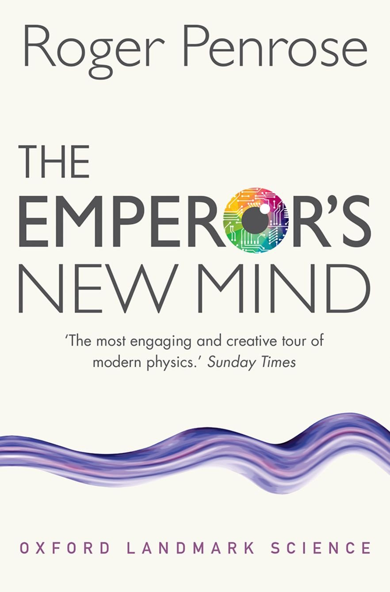

What do Adam Smith, John Maynard Keynes, and Roger Penrose have in common? Well, certainly there must have been something, but it wasn't the content of their books. Smith and Keynes were economists, Penrose is a mathematical physicist. Still, I've mentioned them here together because in a way I'm telling a story and Roger Penrose's book is to me right now in some ways what Keynes's book once was. Let's start with me and Adam Smith.
Back in 07, after putting my small business to bed in 05 and spending a few intensely interesting years in business, finance, and accounting text books, I picked up a copy of Adam Smith's "The Wealth of Nations." I started into it on the plane to Chicago for a summer vacation. On that plane, with an unknown oblivious, warm, middle-aged woman drooling in her sleep on my shoulder, I was slapped with a euphoric moment of profound recognition. In an instant, I knew what I was.
This was a big deal to me. You see, in my early twenties I had bounced from subject to subject, touring through somewhat slowly physics, maths, chemistry, history, literature, languages, and finally business. Nothing fit perfectly. Don't get me wrong, as I mentioned earlier, I very nearly fell in love with physics, but that love dried up. It wasn't her, it was me. Economics, on the hand, was an immediate and ever lasting relationship. Truly, love at first bite. What got me was the birds eye view. The notion of the people in an economy organizing into firms (or family farms on the margins where the rents moved to zero) and specializing to improve output and lower prices, was new to me. It was like there was suddenly this piece of the discipline puzzle I hadn't seen before, and it satisfied my insatiable hunger for knowledge. Of course there are really only a few key concepts that Smith brought to economics, mainly the importance of division of labour (which Ricardo would expand on), the debatable theory of the invisible hand, and the idea that net gains from technology improvement less unemployment costs are positive. But I would soon learn that Economics is a beautiful social science, and Smith's book is on my shelf to this day because he brought her to me.
Read more about the Wealth of Nations here.
As an economist, the Wealth of Nations was for me only the beginning. In the winter of 2008 I lived on the campus at the university and snuck into lectures. I wasn't a student, but I had a schedule on the fridge.
- Finance at 10:30
- Law and Business Administration at 12
- The General Theory of Employment Interest and Money from 2 - 5
- And so on...
The way I saw it, you only needed discipline to get knowledge. The problem was I was wrong. Economics is a beautiful language that expresses conceptually and often mathematically the distribution of scarce resources in social organizations. Without knowledge of theory and the mathematical notation used to describe it, Keynes's book is complex and obfuscated. I muddled through it but it was pointless. Here was something I had fallen in love with, and it was out of reach. Keynes was over my head. Of course, after only a few introductory econ courses any bright and dedicated student will be able grasp Keynes.
Now, I hope you will forgive me for taking this approach, but I will have to get into Keynes later. The reason I've grouped him with Smith and Penrose is that even if conceptually a theory is in easy reach of the layman, it usually takes course work and study to figure them out. And while Penrose writes in an entirely different field, it's the same thing with the "Emperor's New Mind." If you are not able to read math and have no background in science the book will be sluggish and possibly even frustrating. But if you've studied basic mathematics, by which I mean things like set notation, series, calculus, and introductory theory, you will progress through the book with greater and greater ease.
Read more about Keynes here.
Disclaimer: I've yet to finish "the Emperor's New Mind." It's been on my shelf for a decade. A few years ago I read the first half, up to quantum magic and quantum mystery. Recently, I've picked it up again to browse when I need to clear my mind and move myself from more important tasks. Of course, I know the point, which is in a nutshell a wonderful journey through maths and physics to the conclusion that physics does not enable those of us who pursue science to grasp adequately the human mind. Something more is needed.
But before I leave this post for my bed, let me tell you something more of "The Emperor's New Mind." Firstly, it's beautifully written. One cannot say without a more robust indicator if the name made the man or the man made the name, but either way Penrose was aptly named. His prose is light and engaging, bringing a humorous and colloquial warmth to a delightful journey through a maths and science syllabus. Here's an example from his metaphoric illustration of the Mandelbrot Set, which he pens "THE LAND OF TOR-BLED-NAM"
See what I mean. If you've been a big reader of English, you will undoubtedly find it a charming read.
More than that. Come here for a read if you have plans for advanced mathematics, physics, or as I will understand perhaps better over the next few years when I've prioritize finishing it, metaphysics.
It's not my aim to influence you to read from this book. You are my audience. And my audience are from those only who would posses curiosity and a thirst for knowledge. Knowledge of worth does not seek but is sought. I couldn't care less what you read. But let me tell you, this book is so far beautiful written.
comments powered by Disqus